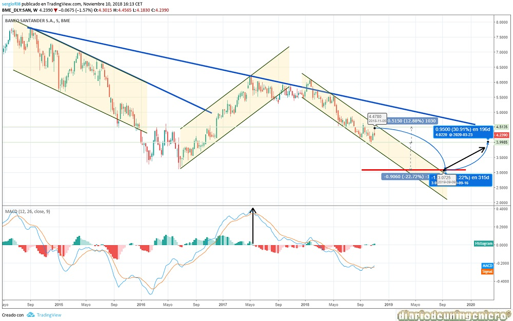
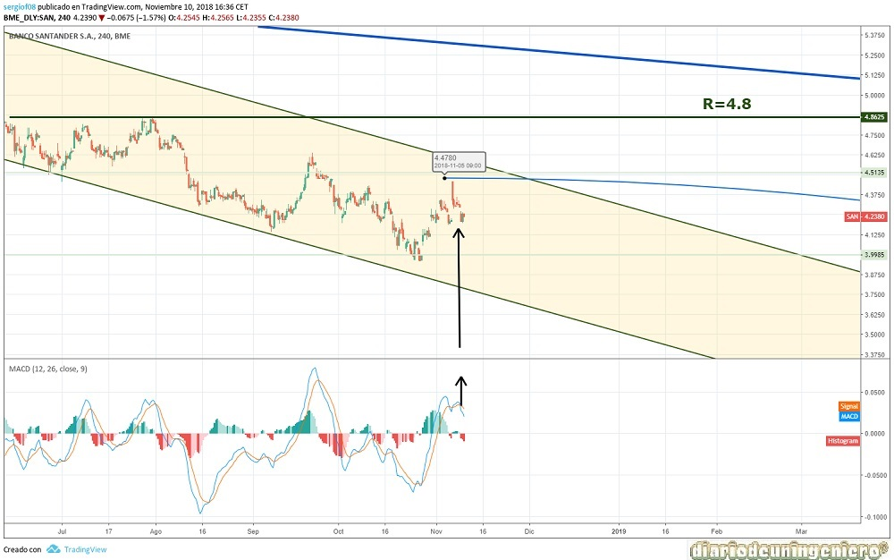

This bank has managed to rise in little more than 20 years in the most important bank in Spain. It has achieved a very large weight also abroad where stands out mainly in Brazil and the United Kingdom .
A giant such as Santander is more difficult to control than another medium bank, and for this reason there are many swamps where it has been incorporated previously and which would have emerged in different sectors. Furthermore, short-term situations in other countries such as Argentina and especially Brazil would have negatively affected the return on capital invested, although due to this diversification, problems in Spain have been less harmful than other entities such as savings banks and, above all, because of the will of Botín father to get rid of all garbage mortgages and property seized as a result of the real estate crisis that erupted at the end of 2007.
Since the death of Emilio Botín the image of the bank and the weight of it has stopped growing while now in a stalemate . Not for the part of the management of her daughter that has not been bad either, since many of the problems come from the previous period and from internal bank crisis, if not from the collateral problems caused by the Spanish crisis and the crisis in the South American countries . Especially Brazil and the devaluation of its currency just before the Olympic Games. In part, this comes from the corruption of its leaders, although currently the country has a right-wing political party that can change society's way of thinking. Thing that could benefit the companies that have a big presence in this country.
If we look at the fundamental data of the bank we can see how the net profit of the group has slowed noticeably with a growth of just 5% per year . This does not agree with the capitalization of the bank that has not stopped going down for years because the expectations were very high in the past, valuing the bank above its possibilities. Although in a bank the valuation of the company is different than that of a company since what really matters is the number of clients and accounts as well as the number of transactions inside. At this moment Banco Santander has already reached a high number of this number of accounts and what it tries to do is to preserve them to a certain extent. To achieve this strategy, he has focused on the accounts with which he really earns something, closing those phantom accounts or purse accounts, taxing clients and only exempting those who leave something with which the bank wins, either payroll or receipts . Including also a small interest with maximum limits. That has allowed him to breathe in the serious crisis that Spain has suffered this last decade.
Although in its eagerness to get faster returns has been exceeded, entering as a shareholder in companies that had certain financial and structural problems such as Abengoa or Duro Felguera and from which the bank has come late to withdraw the trust In the case of Abengoa, the loss of the bank has been quite high since it has made a debt reduction of almost 5,000 million euros. However, he has full control of the company and these losses will be collected over time. In the case of the Banco Popular, only the control of all the branches that it had already had the play quite well. It has absorbed the capital that it had and also the enormous debt of the entity.
Currently, the outlook is not good, but the moment the ECB begins to specify a little more the date with which it will begin to raise interest rates could be a good enough time to enter these prices. Santander is also one of the systemic banks in Spain for which the risk of a bankruptcy of the entity is almost nil since the state will always be there to help and Santander to help the state as much as it can.
In fact, it is quite probable that in 10 years from now, capital in banks will be concentrated in only 3 banks and Santander will be one of them. That will greatly influence that if the country enters a recession due to the lack of workers and the high price of pensions in Spain Santander will be harmed, so it is not good news either.
Being a bank, the debt and all the securities that it carries are not relevant, since the bank is the one that loans and its debt is usually referenced to other banks or entities, as they are the creditors of many companies and individuals.
These data are usually internal to the bank and can not be presented as they are constantly changing.
Here I present the data of fundamentals that I think are most important:
| ### | 2014 | 2015 | 2016 | 2017 | 2018 |
|---|---|---|---|---|---|
| Benefit/Share value | |||||
| Capitalization(M) | 88.040 | 66.792 | 72.313 | 88.409 | 68.401 |
| PER | - | 9,58 | 9,8 | 9,2 | 8,65 |
| Net Benefit (M) | - | 5.966 | 6.204 | 6.619 | 3.872 |
| Dividend | 9.681 | 3.227 | 3.388 | 3.549 | 3.711 |
| Profitability per share | - | 4,72%% | 5,19% | 5.43% | |
If we look at this map we can see how the stock has experienced a downward spiral since the financial crisis of 2008 when it reached 13 euros per share. Since then it has experienced rebounds as the one after the crisis in which the maximums marked would never be exceeded, starting at the moment of a maximum of 6 euros per share. This dynamic is really different than that of the other Spanish banks with a rather flat trend over time . To some extent, it is because the bank pays little or nothing for shareholders and is more dedicated to the bank's international vision and marketing. This share price is due to the expectations created since, as we said before, the annual net benefits remain unchanged in the last three years due to the erosion of the bank's internationalization, which is already getting less and less.
This general trend of decreasing highs and lows leaves institutional investors and funds far from entering the bank in the long term and being their presence more as duties due to favors of the entity or agreements than as investors .
The graph shows that after the victory of Macron in France in 2017, the price would begin to correct and this correction would be aggravated by the Catalan conflict in which the capitalization would be left no more and no less than 33% of the value. Moving from the previous 6 euros to the current 4. This is not the end of the downward pressure since the 3 euros may be touched next. This would be a very good time to enter the value with a reasonable objective around 4 euros and you can get these points very quickly.
The key will be the future rise in rates that will make the bank start earning much more money than usual since the mere fact of having money means having benefits and that the money will appreciate over time, not as in the current economic situation with interest rates close to zero. In addition, if we can continue to reduce unemployment in this country and continue on the current path, the consumption of Spaniards will continue to grow, which could help with the reimbursement of more commissions.

If we look at the short-term chart we can see that after the arrival almost to 4.5 euros, the first resistance that is the value has been yielded and returns to the bearish path. To overcome the short-term bearish channel should exceed 4.5 euros again, which seems quite unlikely. If, on the other hand, the bottom bearish trend line that is currently around 5 euros is exceeded, the whole scenario would change. While this does not happen, the best thing to do is to invest in this value to the downside, with short positions in all the maximums of the value . A pretty good moment would have been playing the previous 4.5 euros.

By using this site you agree to our Terms and Conditions. Please Accept these before using the site.
© 2016 - All Rights Reserved - Diseñada por Sergio López Martínez
El sitio se mantiene gracias a la publicidad, por favor Desactiva Adblock para seguir navegando
He desactivado Adblock![[Valid RSS]](https://www.feedvalidator.org/images/valid-rss-rogers.png "Validate my RSS feed")